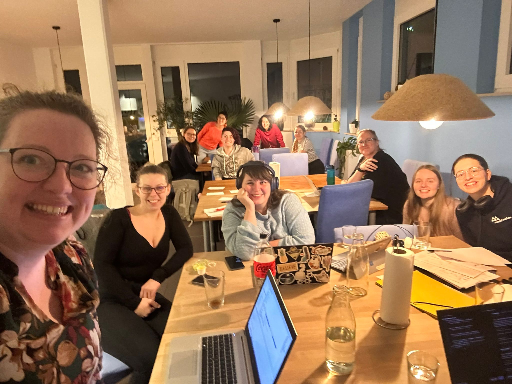
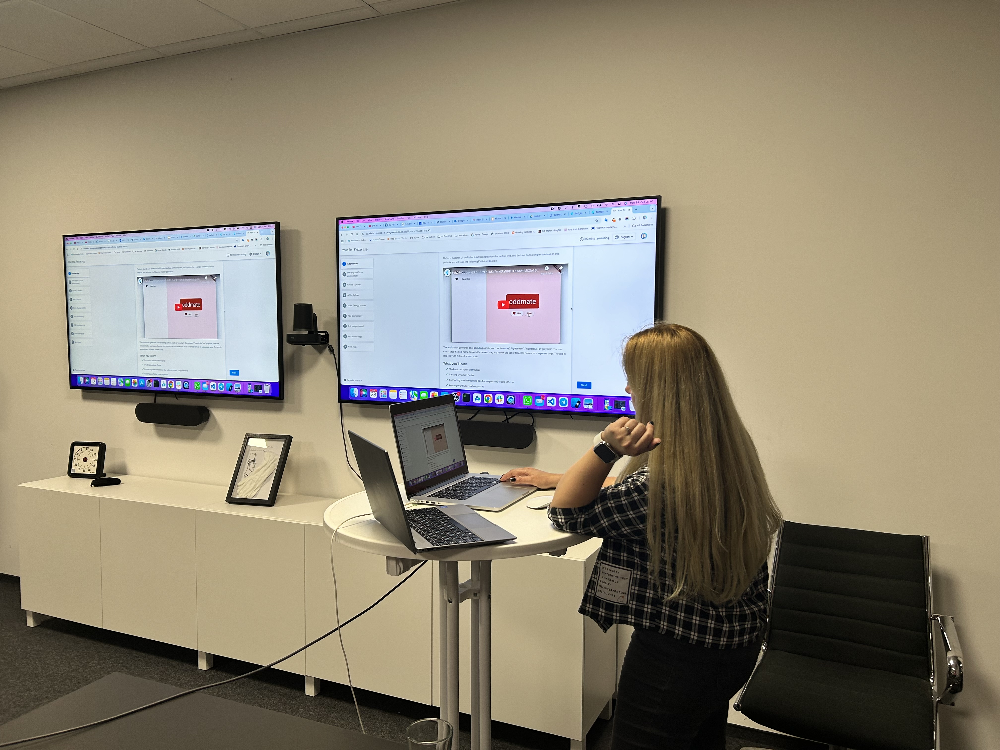

Softwareentwicklerinnentreff Ladybug
A community for women in software engineering in Aachen
Note: This is the "ohne-css" version (without CSS). View the regular version
Note: This is the "ohne-css" version (without CSS). View the regular version

Du bist eine Softwareentwicklerin in Aachen? Du hast Spaß an technischen Themen und schätzt den Austausch über deine Arbeit? Deine Kollegen sind super, aber manchmal fehlt dir die weibliche Note? Dann bist du bei uns genau richtig! :)
Wir möchten uns regelmäßig treffen um uns über unsere Erfahrungen und aktuelle Themen auszutauschen. Dabei ist unser Ziel eine gesunde Mischung aus technischen Details und Softskills - ganz ohne Recruiter!
Wir freuen uns auf Dich!
Bei den Ladybugs Aachen bieten wir Vorträge und Hands-On Workshops zu spannenden Themen wie mobile Entwicklung, Pair Programming und mehr an.
Wir freuen uns über Tech Talks – besonders zu technischen Themen – und laden regelmäßig Frauen aus der IT-Branche ein, ihr Wissen zu teilen. Du musst keine Expertin sein! Die Ladybugs sind ein Safe Space, in dem du üben, experimentieren und auch Feedback sammeln kannst.
Neben unseren Lern-Events genießen wir auch einfach die gemeinsame Zeit – sei es bei lockeren Get-Togethers oder Hack-Evenings.
contact [at] ladybugs-aachen.de